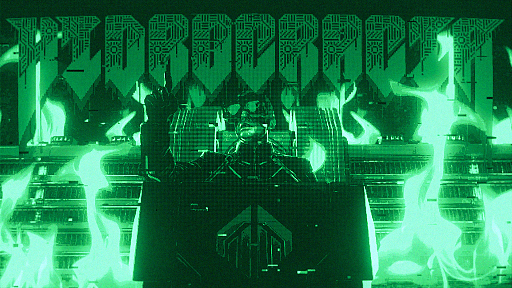

[ REC ] 00:00:00:00
AUDIO_LOG.mp3
SECTOR 094846 – ASERVA

> INICIANDO PROTOCOLO DE ANÁLISIS 094846...
[ESTADO]: CRÍTICO
[UBICACIÓN]: ASERVA - ZONA DE FILTRADO
La mercantilización biológica ha alcanzado niveles terminales. En este sector, las estructuras sociales han sido reconfiguradas por el IMPERIO DEL CAUCE. La casta inferior ya no son ciudadanos; han sido degradados a "Bio-Filtros", unidades orgánicas forzadas a procesar la toxicidad ambiental para generar agua potable destinada exclusivamente a La Cúspide.
> DETECTANDO ANOMALÍA...
El control absoluto se fractura. Un vigía disidente ha interceptado señales de ZYPHOS, una Inteligencia Artificial antigua. Los datos desencriptados revelan una verdad prohibida: la "escasez de agua" no es un fenómeno natural, sino un algoritmo de control artificial diseñado para mantener la subyugación mediante la sed.
[ESTADO]: CRÍTICO
[UBICACIÓN]: ASERVA - ZONA DE FILTRADO
La mercantilización biológica ha alcanzado niveles terminales. En este sector, las estructuras sociales han sido reconfiguradas por el IMPERIO DEL CAUCE. La casta inferior ya no son ciudadanos; han sido degradados a "Bio-Filtros", unidades orgánicas forzadas a procesar la toxicidad ambiental para generar agua potable destinada exclusivamente a La Cúspide.
> DETECTANDO ANOMALÍA...
El control absoluto se fractura. Un vigía disidente ha interceptado señales de ZYPHOS, una Inteligencia Artificial antigua. Los datos desencriptados revelan una verdad prohibida: la "escasez de agua" no es un fenómeno natural, sino un algoritmo de control artificial diseñado para mantener la subyugación mediante la sed.
> BASE DE DATOS: SUJETOS IDENTIFICADOS
// PRINCIPALES

Arthur C. Morgan
ASERVA
ZYPHOS
LA CONCIENCIA
// SOLDADOS

Skullwardens
GUARDIA ÓSEA

Izran Front
RESISTENCIA
// SECUNDARIOS

Nicholas Voren
ARQUITECTO

Ardent Hale
ESTRATEGA
// PRINCIPALES

Supra-Rector
LÍDER

Kael Vorynth
FUNDADOR
// TROPAS & ROBOTS

SS Gigantis
PESADO

RF-6 Celestial
AÉREO

A Goliath
MECHA

Raktor Harvest
EXTRACTOR
// COMANDANTES

Irus Vharge
COMANDANTE

Takion Val’Seraz
ALTO MANDO

Cael
LÍDER MÁXIMO
// OTROS

Grimclowns
MERCENARIOS

Lysa-0
ANOMALÍA
> [ CLASSIFIED_DATA ]: LA HIDROCRACIA
> ACCEDIENDO A DEFINICIÓN DEL RÉGIMEN...
El término "Hidrocracia" define con precisión brutal el nuevo orden surgido tras el colapso. En este sistema, el poder no se sostiene en ideologías o territorios, sino en el control absoluto del agua.
Bajo el mandato del IMPERIO DEL CAUCE, la "escasez" es un arma. La doctrina dicta que los ciudadanos son meros recursos; la extracción vital se realiza directamente de los cuerpos humanos, drenando su esencia para alimentar a la élite.
